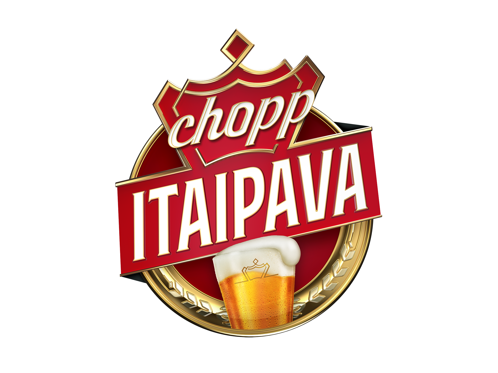
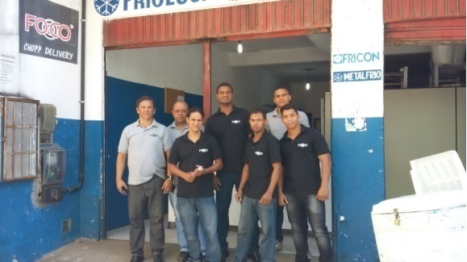
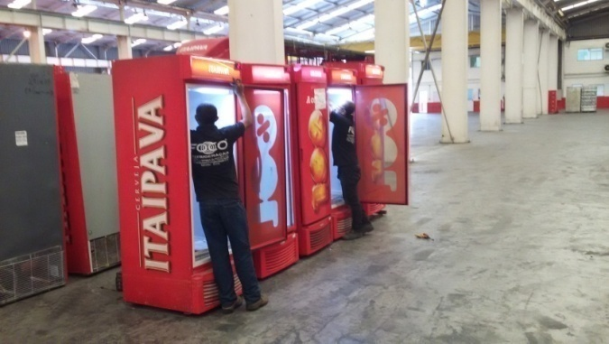
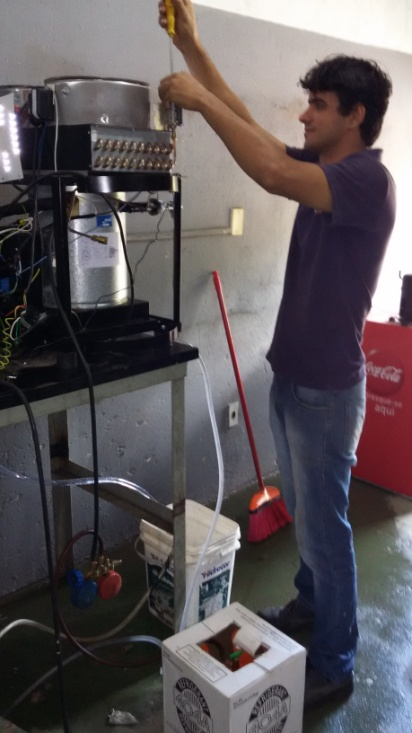
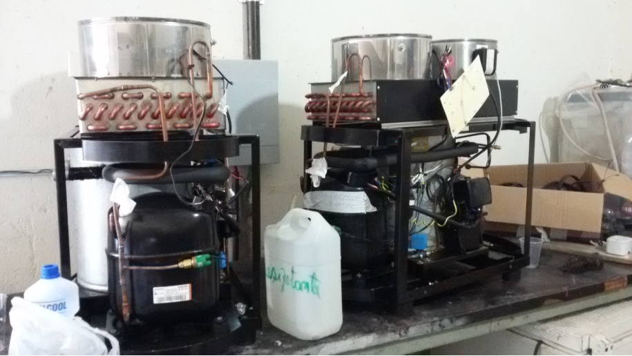
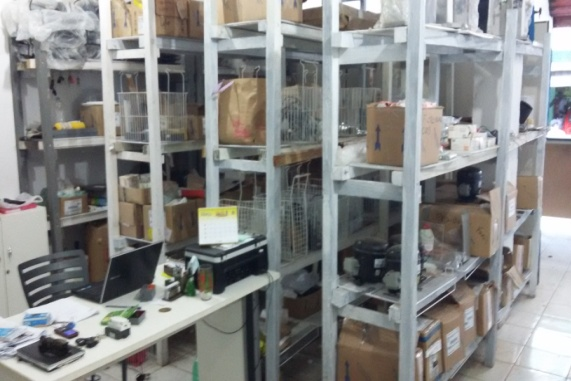

A empresa

Missão
A Foco tem por missão desenvolver, produzir e comercializar chopp, produtos para chopp, com tecnologia e qualidade superiores, respeitando o indivíduo, a sociedade e o meio ambiente.

Histórico
A Foco iniciou no mercado baiano em Janeiro de 2009, tendo como principal atividade o atendimento terceirizado da operação de vending machine da NORSA REFRIGERANTES LTDA, fabricante dos produtos Coca-Cola, durante o primeiro ano.
Atenta às necessidades do mercado, passou a trabalhar na área de chopp, com venda e aluguel de máquinas e acessórios. A Foco conta com uma equipe especializada para atender a grandes e pequenos clientes e eventos na cidade de Salvador e região metropolitana.
Serviços
- Instalação de maquinas vending machine
- Venda de máquinas de chopp
- Peças e acessórios para máquina de chopp
- Projetos para loja de chopp em geral
- Delivery de chopp
- Eventos de chopp em geral
- Show Room móvel de chopp
- Carrinho de chopp para restaurantes e praia
- Serviço de barmen
Produtos
Selecione uma chopeira


Chopeira de gelo quadrada
- Ideal para eventos em locais sem acesso a tomada e para eventos doméstivos de pequeno porte;
- Leve e fácil de usar;
- Capacidade para 10Kg de gelo, com duração mínima de 8 horas;
- Pode ser engatadas em barris de 20 a 30 litros;
- Torneira italiana com saída de líquido e creme;
- Altura: 0,60cm
- Largura: 0,50cm
Chopeira elétrica
- Pode ser usada em casa ou em festas maiores;
- Ideal para eventos domésticos de pequeno porte;
- Não precisa de gelo;
- Utiliza tomada 110v;
- Pode ser engatada em barris de 50 litros;
- Torneira italiana com 1 ou 2 saídas de líquido e creme;
- Vazão: 40 litros/hora;
- Altura: 0,43cm
- Largura: 0,43cm
- Profundidade: 0,60cm
Chopeira elétrica redonda
- Ideal para eventos em locais sem acesso a tomada e para eventos doméstivos de pequeno porte;
- Produzida com material de polietileno, com isolamento em poliuretano e vem com 1 torneira e adesivo digital laminado;
- Fácil locomoção;
- Não requer uso de energia;
- Altura: 0,55cm
- Largura: 0,40cm
- Profundidade: 0,40cm
Chopeira grande com 2 torneiras
- Ideal para alavancar a renda e o sucesso de seu estabelecimento;
- Chopeira Elétrica com Expansão Direta.;
- Fabricada para uso comercial.;
- Com 02 Torneiras Italiana com função liquido e creme.;
- Chopeira elétrica com sistema de Expansão Direta;
- Altura: 0,85cm
- Largura: 0,50cm
- Profundidade: 0,70cm
Chopeira pequena com 1 torneira
- Indicada para residências;
- Capacidade de vazão para até 50 litros/hora;
- Atende uma festa residencial de médio porte para até 20 pessoas;
- Gás: R-134A
- Peso: 35 kg
- Altura: 0,47cm
- Largura: 0,40cm
- Profundidade: 0,57cm
Cilindo para CO2 9Kg
- Ideal para armazenar CO2 para utilizar no sistema de chopp e/ou fazer carbonatação forçada;
- Cilindro de alumínio;
- Com válvula e teste hidrostático pronto para uso;
- Testados para excederem 100.000 ciclos;
- Altura: 0,70cm
- Largura: 0,22cm
Delivery
Como funciona o nosso sistema de Delivery:
Entre em contato conosco através do Serviço Express
Forneça dados do seu evento para entendermos sua necessidade
Oferecemos toda estrutura e as melhores marcas para o seu evento
Levamos os produtos e todo equipamento e instalamos no seu evento

Você se diverte no seu evento tomando um chopp geladinho de qualidade.
Estamos preparados para atendê-lo de pequenos a grandes eventos, do churrasco com os amigos a confraternização da empresa.
Na casa de praia ou no sítio, levamos o melhor chopp até você.
Galeria






Mandamentos do Chopp
- 01. Evite beber ou servir em copo de plástico. O copo deve ser de cristal com as paredes finas e lisas, devidamente lavado com sabão neutro.
- 02. Evite aceitar o chopp com temperatura superior a 8 ºC, o que interfere negativamente em seu sabor.
- 03. Seja rápido no consumo. Não deixe a bebida esquentando em cima da mesa.
- 04. Devolva o copo ao garçom se o chopp vier sem colarinho, ou com menos de dois dedos de espuma. Ele é fundamental para manter as características de aroma e paladar da bebida.
- 05. Não cometa a heresia de adicionar Steinhagger, groselha, limão, sal ou qualquer outro produto ao chopp. Deve ser bebido puro.
- 06. Consuma a bebida no menor prazo possível após a data de fabricação.
- 07. Os barris não devem chacoalhar muito no trajeto de caminhão até a festa e devem ser sempre mantidos a temperaturas entre 0º e 5º Celsius, quando necessário.
- 08. Peça sempre um tira-gosto para acompanhar. Petiscos retardam a embriaguez e evitam enjôos, embora engordem.
- 09. Conquiste a amizade do "Tirador" de chope. Ele é o maior responsável por sua qualidade.
- 10. Procure não beber sozinho e, como conseqüência, não beba sem brindar.
Contatos


comercial@focochoppdelivery.com.br
(71) 3450-5125
(71) 3178-7133
(71) 98711-3303